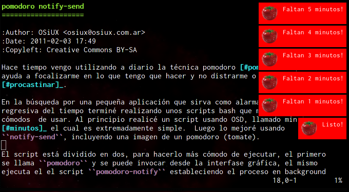

Pomodoro notify-send y Minutos OSD
index | OSiUX | blog | docs | charlas | rss
Luego de varios meses pude dedicar un par de pomodoros a documentar los dos scripts que uso para hacer mis pomodoros. :-)

Hay dos opciones, usando OSD (On Screen Display) y el comando
notify-send, ambos scripts están realizados en bash.
- pomodoro minutos osd
- pomodoro notify send
Para entender un poco más sobre los pomodoros leer la técnica pomodoro